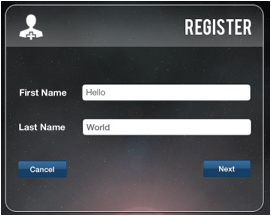
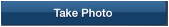
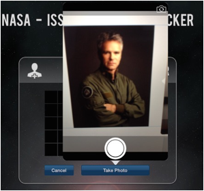
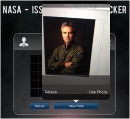
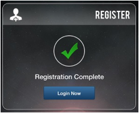

Don't have an ISS FIT account? No problem! Just open the application and look for the blue "Register" button on the login screen. Click this "Register" button.
On the Register page you'll be asked to enter your first and last name.

Click "Next" after you have done this. You'll see a "Take Photo" button on the next page:

Click on this "Take Photo" button and use the iPad camera controls to take a picture of yourself. This picture will be used to identify your account when you login to the ISS FIT app. You'll be able to retake your photo right away using the "Retake Photo" button", or you can update your account photo later under "Profile", so don't worry if it's not perfect the first time!

Once you've taken your account photo, your profile image will be displayed. Click the "Finish" button to complete your registration.

The registration process will be complete and you'll see a screen confirming this:

Clicking on the "Login Now" button will let the created account login to the application immediately.